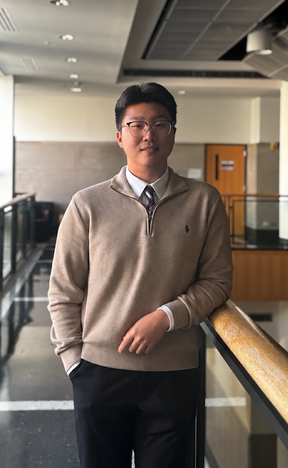

Behind the ledger
Yongjin (Jin) Hwang

A curiosity about finance.
A commitment to learning.
I’m Yongjin (Jin) Hwang, an undergraduate studying Finance and Accounting at Indiana University’s Kelley School of Business. My interests lie in macro finance, behavioural finance, and financial economics—particularly how economic conditions and investor behaviour shape financial markets.
My experience includes research assistant roles at HKU Business School and financial modelling and valuation work through the Kelley Finance Seminar. These experiences have strengthened my interest in connecting financial theory with empirical evidence.
I created The Financial Research Ledger to share independent undergraduate research, analysis, and ideas as I continue learning about finance, markets, and valuation.